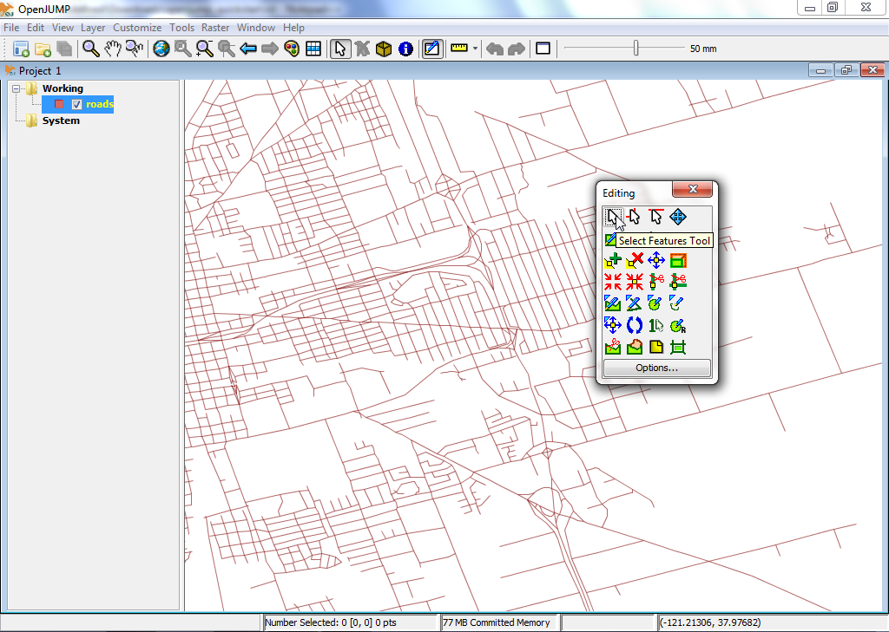
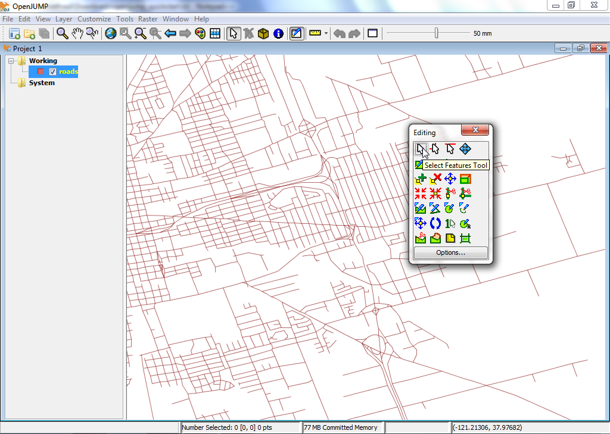

Inicio rápido de OpenJUMP GIS¶
OpenJUMP es un programa SIG de escritorio que permite una fácil visualización y edición de datos SIG vectoriales. La edición PLUS también admite el análisis de datos ráster.
Contents
Iniciar OpenJUMP¶
En el escritorio, elija .
La interfaz de usuario de OpenJUMP tiene cuatro (4) componentes básicos.
- [1] La primera es una barra de menú de nivel-superior para acceder a la mayoría de las funciones.
- [2] La segunda es una barra de herramientas principal que se encuentra justo debajo de la barra de menús. Los botones dan acceso a las funciones de visualización y navegación más importantes.
- [3] La tercera es una vista de árbol a la izquierda que muestra la lista de capas del proyecto activo.
- [4] La cuarta es la vista de mapa. Este es el mapa real donde se da una representación gráfica de los datos espaciales en cada capa.
Por último, hay una barra de información en la parte inferior que muestra las coordenadas del puntero del mouse, los informes de procesamiento y el uso de memoria. Una ventana de proyecto contiene una lista de capas y una vista de capa. Cada instancia de OpenJUMP puede contener varios proyectos. En este inicio rápido, sólo trabajaremos con una sola ventana.

Abra un archivo shape ESRI¶
- En la barra de menús de nivel superior de OpenJUMP, seleccione . Esto le presentará un cuadro de diálogo que le permite abrir archivos que contienen datos geoespaciales.
- Busque un shapefile ESRI. Busque un archivo con la extensión .shp (por ejemplo, en el LiveDVD en /home/user/data/natural_earth2/ne_10m_admin_0_countries.shp).
- Seleccione el archivo y haga click en el botón Finalizar en el cuadro de diálogo. Después de unos momentos, podrá ver los datos de su shapefile en la Vista de Mapa. También verá una nueva capa creada para sus datos en la Lista de Capas. El nombre de la Capa coincidirá con el nombre del archivo shape.

Truco
Otra opción más rápida es arrastrar y soltar directamente su archivo shapefile en la Vista de capa.
Estilo de una capa¶
- En la Lista de Capas, haga click con el botón derecho en el nombre de la capa. Esto mostrará un menú emergente.
- Elija . El cuadro de diálogo Cambiar estilos tiene cinco (5) pestañas que le permiten cambiar la forma en que se muestra la capa en la Vista de Mapa. Esto incluye cambiar el color del trazo, el color de relleno, el estilo de línea y el grosor de línea, la transparencia, la adición de etiquetas y la determinación en qué escalas máxima y mínima se muestra la capa.


Editar geometrías de entidades en una capa¶
En la Lista de Capas, haga click con el botón derecho en el nombre de la capa. Esto mostrará un menú emergente.
Haga click en la entrada de menú «Editable» para que se muestre una marca de verificación. Esto abrirá una nueva barra de herramientas flotante sobre la Vista de Mapa en el lado derecho. Esta barra de herramientas tiene un conjunto de botones que puede utilizar para editar la geometría de una entidad geográfica.
 

Vamos a probar una edición rápida. Primero tenemos que seleccionar una geometría y luego mover un punto de la geometría. Para ello, primero haga click en el botón que muestra un cursor del ratón en la barra de herramientas de edición (botón superior izquierdo).
Activar y hacer clic en una sola entidad en la Vista de Mapa para seleccionarla. Si la selección funcionó, el color de la línea de entidades debe cambiar a amarillo y aparecen pequeños cuadrados amarillos en cada punto de ángulo (vértice) en la geometría de la entidad.

A continuación, haga clic en el botón que muestra una cruz azul con un cuadrado amarillo en el medio, la herramienta Move Vertex Tool (pasar el cursor sobre los botones le da una descripción del botón). Ahora debería ver que el cursor del mouse cambia a una pequeña cruz negra cuando lo mueve sobre la Vista del mapa.

Intente usar esto para mover uno de los vértices/puntos de la geometría que seleccionó antes haciendo clic en uno de los vértices y arrastrándolo (dejando presionado el botón del mouse).

{kind=link}
¿Qué sigue?¶
Este es solo el primer paso en el camino hacia el uso de OpenJUMP. Queda mucho más material por descubrir.
- Puede descargar tutoriales para OpenJUMP aquí: https://sourceforge.net/projects/jump-pilot/files/Documentation/
- Puede leer el wiki de OpenJUMP aquí: http://ojwiki.soldin.de/index.php?title=Main_Page
- Puede obtener ayuda rápidamente en la lista de correo de usuarios de OpenJUMP: https://groups.google.com/forum/#!forum/openjump-users
- La última versión de OpenJUMP se puede encontrar aquí: https://sourceforge.net/projects/jump-pilot/files/OpenJUMP/